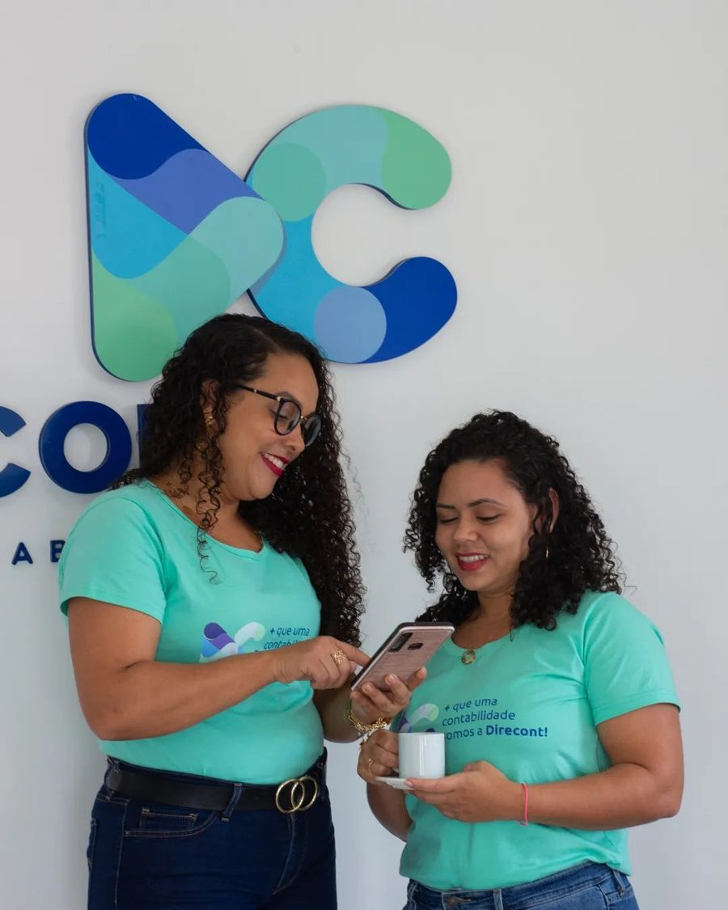
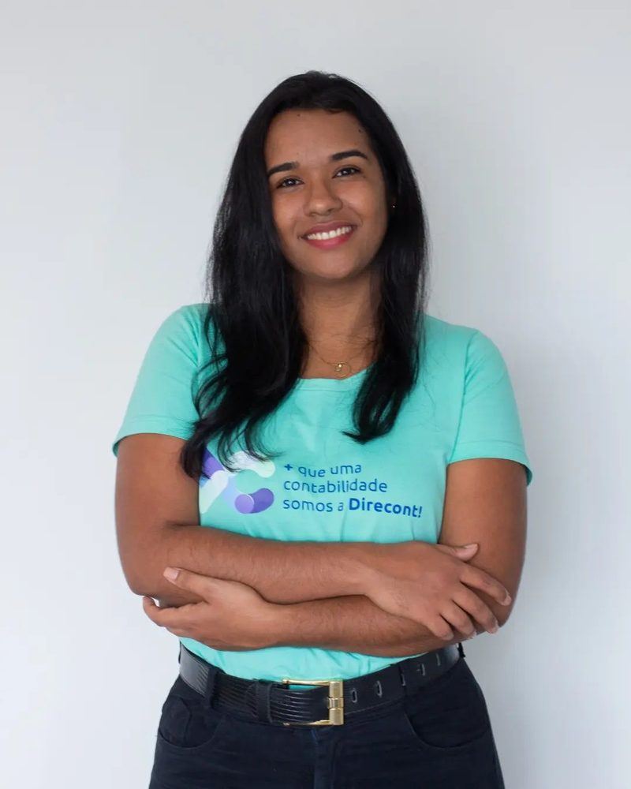
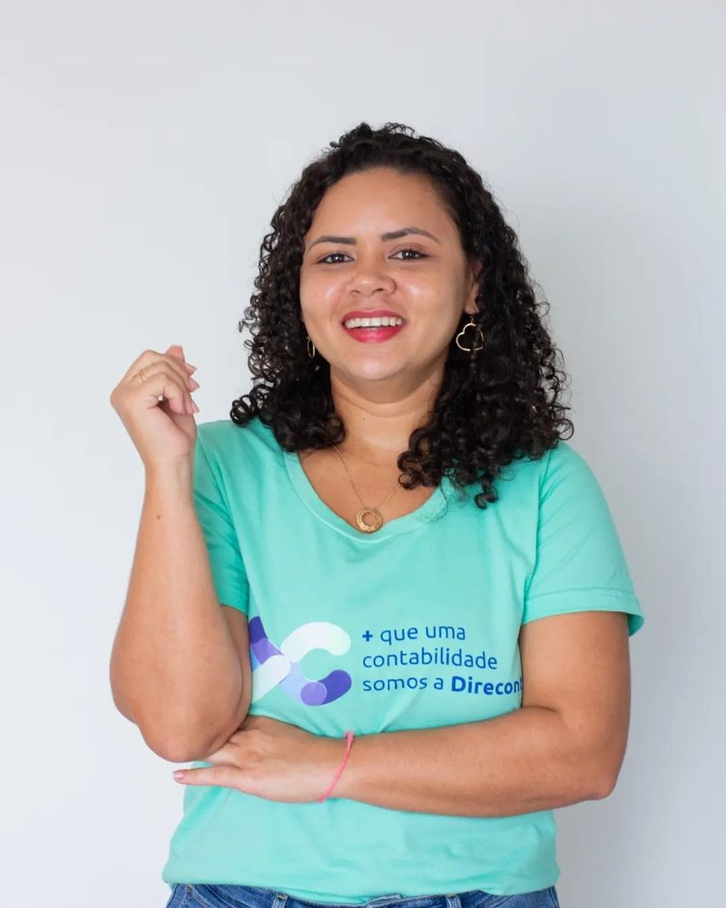
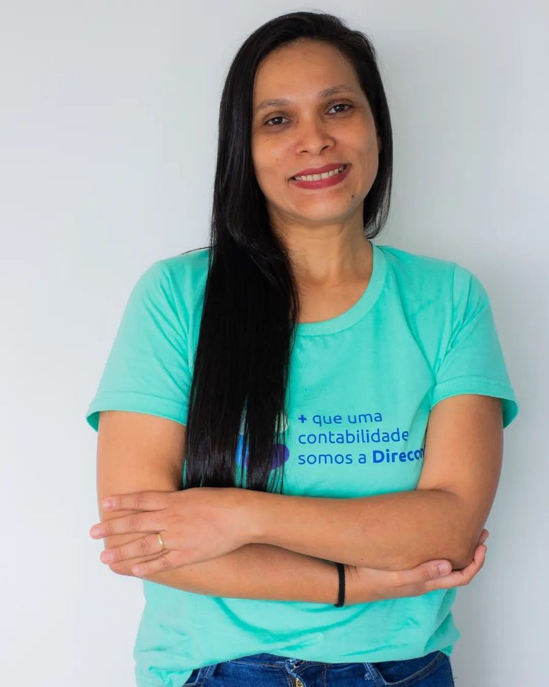
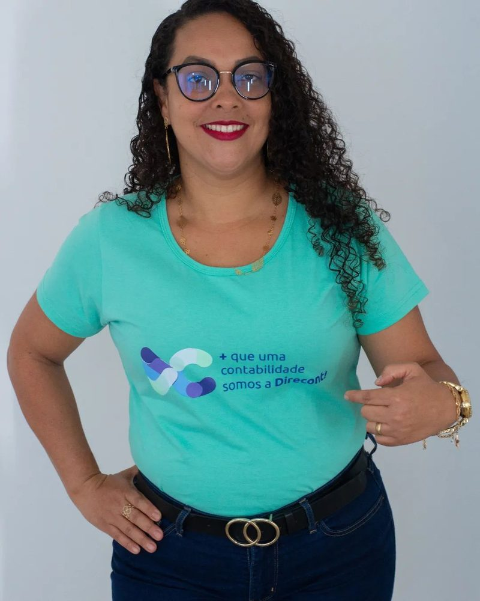

Escritório de contabilidade · Alto da Cruz, Camaçari-BA
+ que uma contabilidade, somos a Direcont.
Abertura de empresas, contabilidade e fiscal, departamento pessoal, BPO financeiro e imposto de renda. Desde 2004 em Camaçari, com o atendimento “lado a lado com o cliente”.


Por onde começar
Em que momento está a sua empresa?
Cada caminho leva a uma página para ler com calma. A informação é geral; o escritório confirma o enquadramento do seu caso.
Vou abrir uma empresa
Natureza jurídica, regime, registros e alvarás, em ordem.
Abertura TrocarJá tenho empresa e quero trocar de contador
Como é a passagem, etapa por etapa.
A troca Pessoa físicaPreciso declarar o imposto de renda
Documentos e por que se antecipar.
Imposto de renda EquipeVou contratar ou já tenho funcionários
Admissão, folha, férias e eSocial.
Departamento pessoalO mês da sua empresa com a Direcont
Quatro semanas, uma rotina que você não precisa decorar.
“O seu papel não é dominar cada detalhe da contabilidade, é confiar em quem cuida disso pra você”, escreve o escritório. Este é o desenho geral de um mês: o que entra, o que é conferido e o que volta para você.
- semana1Organizar
O movimento do mês anterior chega e é conferido.
Notas e extratosPonto e variáveis da folhaContas a pagar e a receber - semana2Folha
A folha de pagamento é fechada e conferida com a empresa.
Folha e recibosEncargos da folhaeSocial, quando se aplica - semana3Impostos
Os impostos do mês são apurados e as guias, enviadas.
Apuração dos impostosGuias para pagamentoObrigações acessórias - semana4Fechamento
O mês é fechado nos livros e vira conversa.
Escrituração contábilConciliação e indicadoresDúvidas e próximos passos
A ordem é ilustrativa. As datas de cada guia e obrigação variam com o regime e a atividade da empresa — o escritório combina o calendário do seu caso. Fonte da frase: Facebook da Direcont.
Trocar de contador sem dor de cabeça
Já tem empresa e quer mudar de escritório?
A troca de contador pode ser feita com a empresa funcionando. O que dá trabalho é a passagem de documentos e acessos — e é isso que a equipe organiza com você, em etapas. O tempo de cada etapa depende da empresa e do que o escritório anterior entrega.
- CNPJ e contrato social (ou requerimento de empresário)
- Regime tributário atual, se souber
- Últimas guias e declarações
- Funcionários e pró-labore, se houver
- O contato do escritório atual
- 1Conversa
Olho no olho: como a empresa funciona hoje, o que incomoda e o que você espera do escritório.
- 2Diagnóstico
Com o CNPJ e os documentos, a equipe olha o regime, os cadastros e o que está em aberto.
- 3Contrato e aviso
Você formaliza com a Direcont e avisa o escritório anterior, como prevê o seu contrato com ele.
- 4Passagem de bastão
Documentos, livros e acessos são recebidos e conferidos; o que faltar é pedido com calma.
- 5Primeiro mês junto
A rotina começa acompanhada de perto, com espaço para perguntas a cada etapa.
O que o escritório cuida
Da abertura ao imposto de renda.
Os serviços que a própria Direcont divulga no site antigo e no LinkedIn, cada um com uma página.
Natureza jurídica, regime, registros e alvarás — e também regularização e encerramento.
Ler a páginaContábil e fiscalContabilidade e fiscalEscrituração, impostos, Simples Nacional, Lucro Presumido e obrigações acessórias.
Ler a páginaPessoalDepartamento pessoalAdmissão, folha, eSocial, férias, 13º, desligamento e convenção coletiva.
Ler a páginaFinanceiroBPO financeiro e controladoriaContas a pagar e a receber, conciliação, indicadores e reuniões periódicas.
Ler a páginaPessoa físicaImposto de rendaA declaração anual, os documentos e por que vale se antecipar.
Ler a páginaDesde 2004O escritórioA história, a equipe e o registro no CRC-BA.
Ler a páginaO escritório
Desde 2004, no Alto da Cruz.
A Direcont abriu o CNPJ em 26 de abril de 2004, com a mesma sócia-administradora desde o primeiro dia. Hoje a equipe veste a camiseta verde-água com o lema do escritório — e parte dela está na casa desde o começo.
- 2004abertura do CNPJ, em Camaçari
- CRC-BAescritório com registro ativo
- 5,0no Google, em 28 avaliações




A equipe da Direcont e a fachada do escritório. Fotos publicadas pelo escritório no perfil do Google.
Na voz do escritório
+ que uma contabilidade
somos a Direcont
O lema estampado nas camisetas da equipe. Abaixo, frases que o próprio escritório publicou.
“Tudo isso sem perder aquilo que mais prezamos, o atendimento humanizado e lado a lado com o cliente. Somos mais que uma contabilidade, somos a direcont.”Site antigo da Direcont, “quem somos”
“Somos sempre super acessíveis e valorizamos tanto o olho no olho, relacionamento sempre em primeiro lugar.”LinkedIn da Direcont
“Contabilidade não é gasto. É proteção para o seu negócio.”Post da Direcont no LinkedIn, 2026
“Nossa equipe sempre trabalha com respeito e atenção para proporcionar um atendimento acolhedor.”Resposta do escritório a uma avaliação no Google
Avaliações
5,0 no Google, em 28 avaliações.
Trechos curtos de avaliações públicas da ficha do escritório. Nomes abreviados.
Conheço essa equipe desde 2015, e com a propriedade de quem já se aventurou por outras contabilidades, nunca vi pessoas tão comprometidas e cuidadosas quando se trata de perrengues que nós empresários passamos!
Fui cliente deles por um tempo e a participação deles foi um diferencial em todo o processo de abertura e encerramento da empresa.
A equipe trata cada cliente com todo respeito e atenção, o que faz toda a diferença.
Os profissionais que me atenderam destacaram-se pelo elevado padrão de qualidade, comprometimento e dedicação […]
trabalho sério, total atenção com cliente
Atendimento e como chegar
R. Gonçalves Dias, 37-B.
No Alto da Cruz, em Camaçari: a fachada branca com o letreiro azul e o símbolo DC. Veja o atendimento.
Direcont ContabilidadeR. Gonçalves Dias, 37-B · Alto da Cruz · Camaçari – BA · 42803-151
Segunda a sexta, 8h às 17h30
Horário da ficha do escritório no Google. Para uma reunião, combine o dia antes pelo WhatsApp.
Dúvidas frequentes
Perguntas comuns
Onde fica o escritório?
Na R. Gonçalves Dias, 37-B, Alto da Cruz, Camaçari-BA (CEP 42803-151). Veja o atendimento e o mapa.
Qual é o horário?
Segunda a sexta, das 8h às 17h30, segundo a ficha do escritório no Google. Sábado e domingo, fechado.
Posso trocar de contador no meio do ano?
A troca pode acontecer com a empresa funcionando. A equipe combina as etapas com você e com o escritório anterior. Veja como é a troca.
Vocês fazem imposto de renda de pessoa física?
Sim, o imposto de renda está entre os serviços que o escritório divulga. Veja a página do imposto de renda.
Ainda não tenho empresa. Por onde começo?
Por uma conversa sobre a atividade e o jeito de trabalhar. O escritório confirma o enquadramento do seu caso. Veja abertura de empresa.
O escritório é registrado no CRC?
Sim. O escritório tem registro ativo no CRC-BA (CRC-BA BA-004836/O), e a sócia-administradora, Daniela Silva Alves de Souza, é técnica em contabilidade (CRC-BA BA-022575/O).
Vamos conversar
Conte como está a sua empresa. A equipe responde pelo WhatsApp.
R. Gonçalves Dias, 37-B, Alto da Cruz, Camaçari. Segunda a sexta, das 8h às 17h30. WhatsApp (71) 3622-9194.